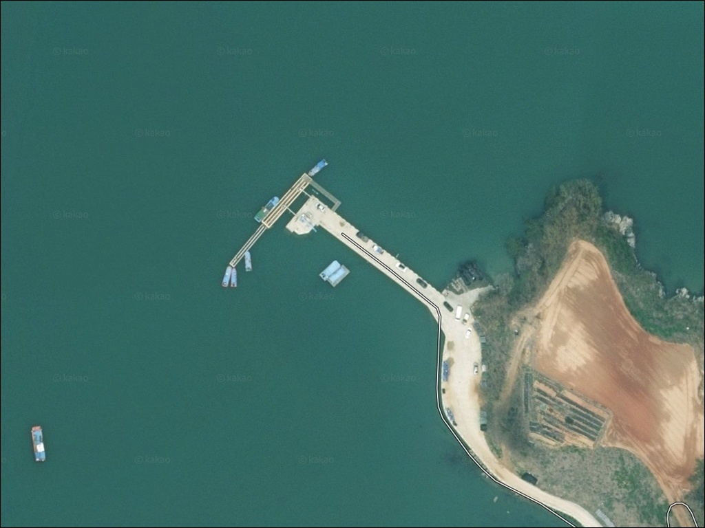
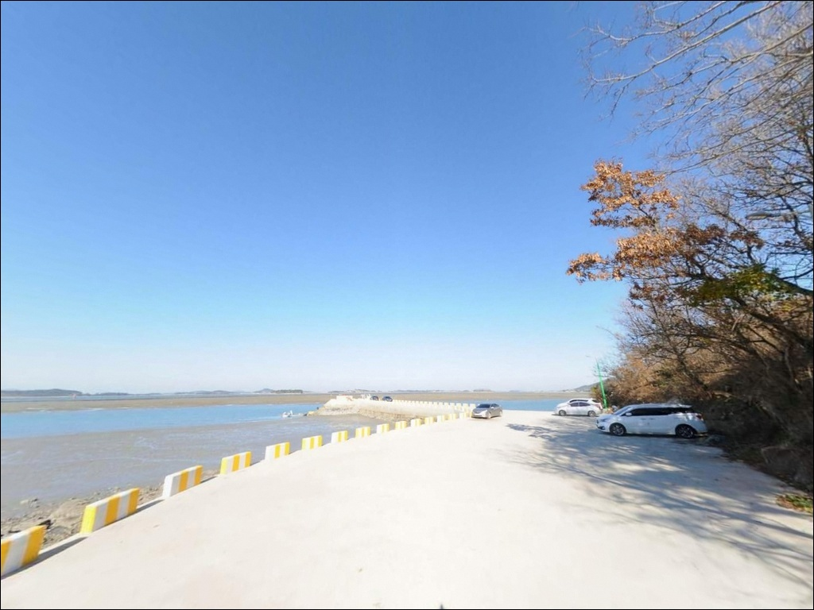
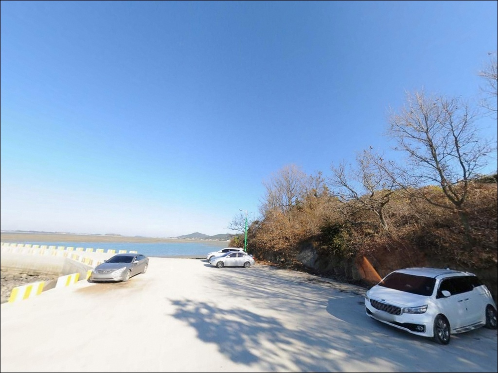
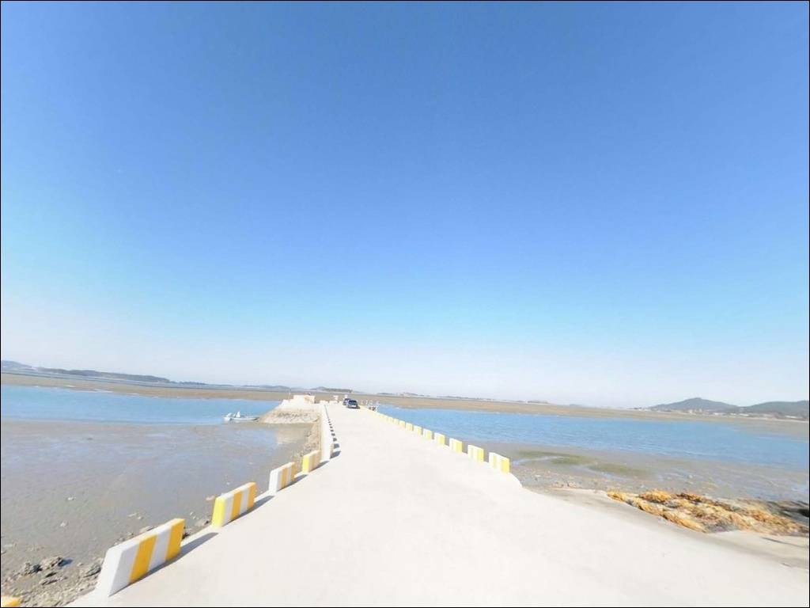
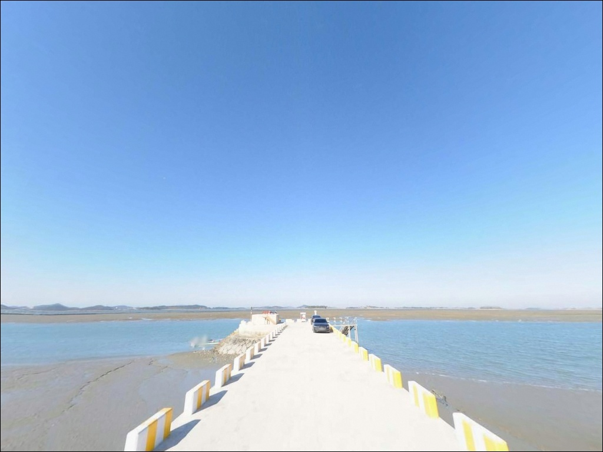
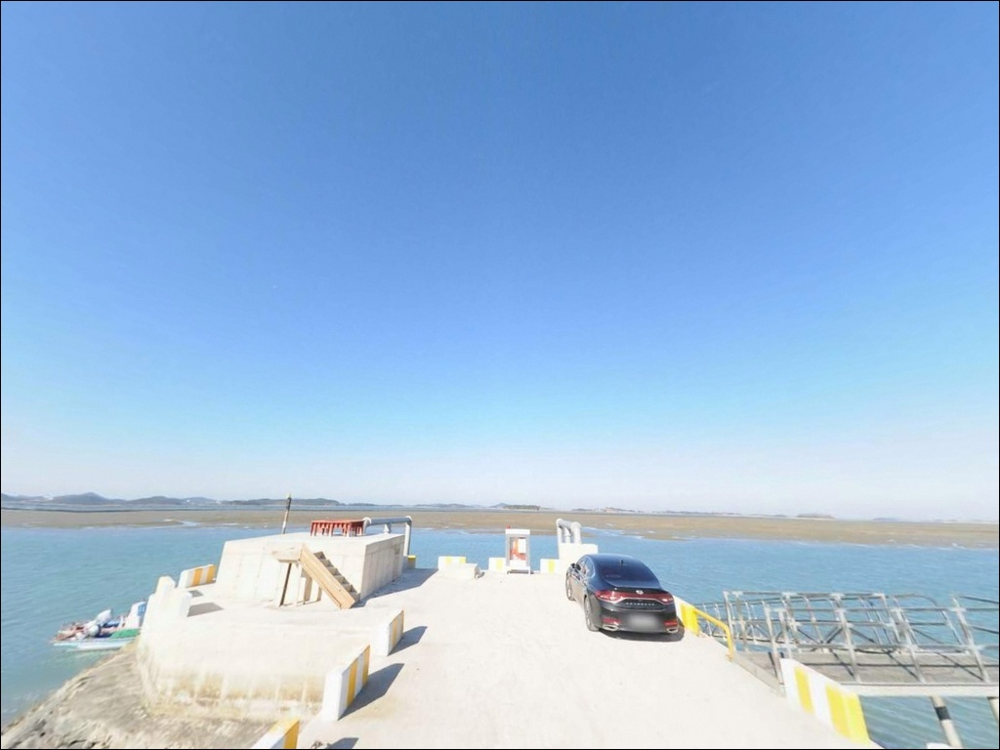
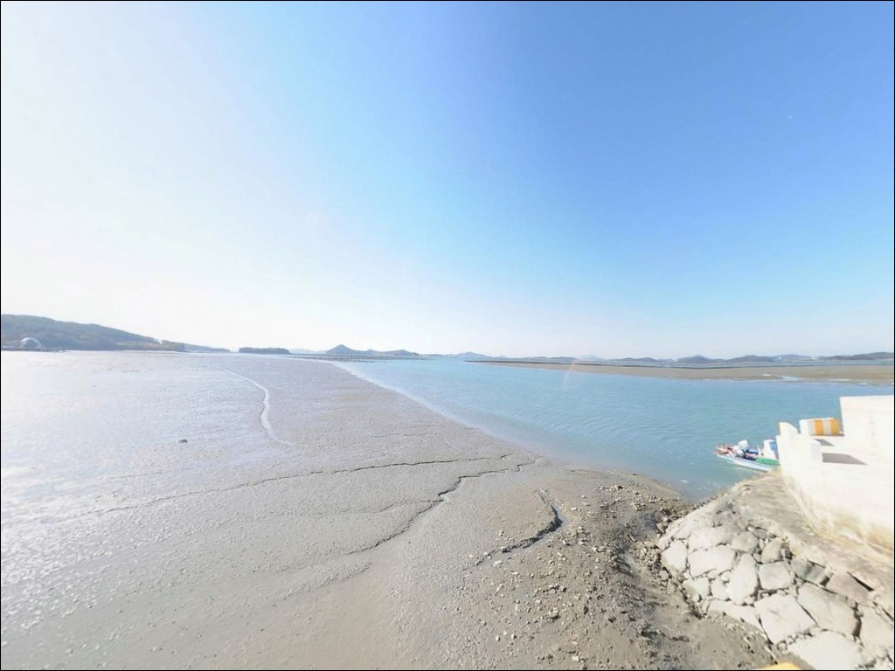
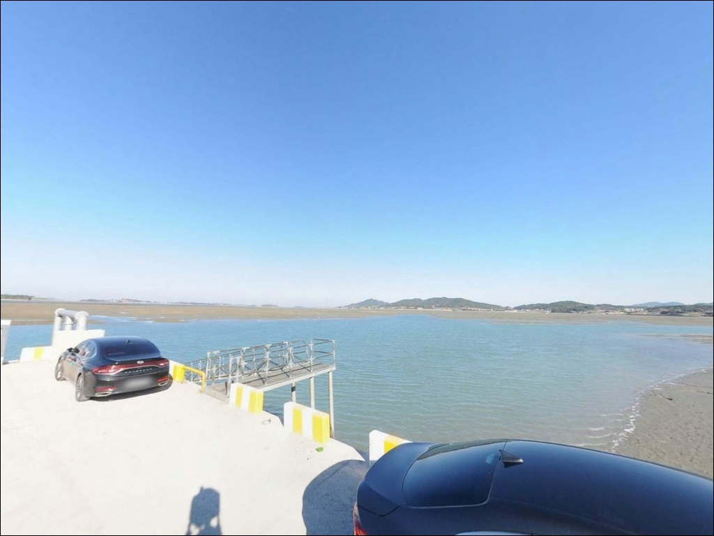
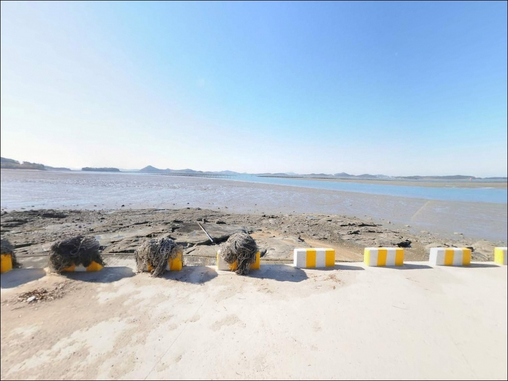

복길리 선착장, 전남 무안군 자연의 여백을 느낄 수 있는 차박, 낚시 명소
이 페이지에는 광고(제휴 링크 포함)가 있으며, 광고 링크를 통해 구매하면 운영자가 판매 수익 또는 수수료를 받을 수 있습니다. 포인트 사진: 카카오맵 스카이뷰·로드뷰. 이 페이지의 지도·사진 이미지는 카카오맵의 실제 서비스 이미지와 다를 수 있습니다.


포인트 안내
복길리 선착장
전남 무안군 청계면 복길리 461
서해 갯벌형 포인트에서 가장 자주 틀리는 판단은
조위를 확인하지 않고 출발하는 것입니다.
간조 시각에 맞닥뜨리면 갯벌이 넓게 드러나
어떤 채비도 쓸 수 없는 상황이 됩니다.
이 글은 복길리 선착장의 진입 여건,
물때 판단 기준, 낚시 스타일 적합성을
중심으로 정리합니다.
무안군 청계면 복길리는
서해 내만 깊숙이 자리한 소규모 어촌 마을입니다.
복길항은 2005년 어촌정주어항으로 지정된
선착장 200m 규모의 소형 항으로,
무안 서남부 해안선에서
조수간만의 차가 두드러지게 작용하는
갯벌형 내만 포인트입니다.
조황 단정이나 특정 어종 보장은
이 글의 범위에 포함되지 않습니다.
지형 조건, 물때 판단, 낚시 방식 적합성을
토대로 출조 전 판단을 돕는
정보를 담았습니다.

1. 포인트 위치 및 진입 동선 분석
복길리 선착장은 무안군 청계면 내만 해안선에
위치한 소형 어항입니다.
진입은 복길리 마을 내부 도로를 경유하는 구조로,
농어촌 특성상 도로폭이 좁은 구간이
포함되어 있습니다.
초행이라면 위성지도로 진입로를 미리 확인하고
출발하는 편이 좋습니다.
선착장 주변 회차 공간은
소형 정주어항 특성상 넉넉하지 않습니다.
대형 SUV나 캠핑 장비를 실은 차량이라면
회차 여건을 사전에 파악해 두어야 합니다.
진입 후 후진으로 돌아나와야 하는 상황이
생길 수 있으므로 주의가 필요합니다.
주차는 선착장 입구 인근 공터를
활용하는 방식이 현실적입니다.
복길항은 95m 규모의 어민 작업장이
공식 시설로 운영되는 항이므로,
하역 구역이나 어구 보관 공간을 점유하지 않는
자리를 먼저 확인해야 합니다.

2. 차박 환경 평가 및 야간 체류 여건
복길리는 어촌마을과 인접한 소규모 항으로,
민가 거리가 가깝고
프라이버시 여건은 제한적인 편입니다.
야간에도 어촌 생활 소음이나 어선 작업이
이어질 수 있어 완전한 고립형 차박 환경을
기대하기 어렵습니다.
가로등 수가 많지 않은 어촌 항 구조상
외항 쪽으로 나갈수록 개인 조명 장비 없이는
이동이 불편해집니다.
야간 낚시를 병행하는 경우
헤드랜턴은 필수이며,
서해 갯벌 특성상 밀물과 썰물에 따라
발판 상태가 크게 달라지므로 주의가 필요합니다.
복길항은 어민 작업 공간이 공식 시설로
지정된 항입니다.
차박 용도로 선착장 공간을 장시간 점유하는
방식보다는
당일 짬낚시 형태의 방문이
이 포인트에 더 어울리는 이용 방식입니다.


3. 주변 편의시설 및 인프라 현황
복길리 선착장 반경 3km 이내에
편의점이나 마트에 대한 확정 정보는 없습니다.
소규모 어촌 마을 구조상
완전 자급 체제로 진입하는 것이
현실적인 준비 방식입니다.
식수, 얼음, 낚시 소품, 연료 모두
출발 전에 갖춰야 합니다.
청계면 소재지 방면에서
미끼와 채비를 구입한 뒤 진입하는 동선이
현실적입니다.
목포 시내까지는 15~20km 권역으로,
부족한 용품이 있다면
이 방향을 활용하는 것이 효율적입니다.
야간 체류 중 응급 상황 발생 시
가장 가까운 대형 의료 인프라도
목포 방향이 됩니다.
기상 급변 시 즉시 철수 판단이
중요한 포인트입니다.

4. 진입 전 반드시 챙겨야 할 준비사항
복길리 선착장 방문 전 가장 먼저 확인할 것은
물때입니다.
서해 갯벌형 내만 포인트는
간조에 낚시 자리 자체가 사라지는 구조이며,
복길항은 이 특성이 두드러지게 작용합니다.
바다타임에서 무안 청계면 기준 물때를 확인하고
만조 전후 2~3시간을 목표로 출발 시각을
맞추는 것이 기본 전략입니다.
원투낚시 중심 포인트에서는 채비 손실이 잦습니다.
갯벌과 모래 바닥이 혼합된 구조에서
봉돌과 바늘 소모가 빨라지므로
여분 채비는 넉넉하게 준비하는 것이 좋습니다.
서해 바람은 방향과 세기 변화가 빠릅니다.
당일 아침 기상청 예보를 다시 한 번 확인하고
출발하는 습관이 헛걸음을 줄이는 조건입니다.
어선 하역 시간대와 겹치지 않도록
자리를 잡는
기본 매너도 중요합니다.

5. 갯벌이 넓을수록 물때가 먼저인 이유 — 복길항 지형 분석
복길항은 서해 내만 갯벌 지형에 자리한
소형 선착장입니다.
외해 직결형이 아닌 내만 구조로,
조수간만의 차가 큰 이 해안선에서는
썰물 시 갯벌이 넓게 드러나고
만조 전후에만 수심이 확보되는
구조입니다.
방파제 200m 구조에서 낚시 접근이 가능한 구간은
외항 방향 끝단 쪽입니다.
이 구간에서는 만조 전후 조류 흐름이 살아나는
타이밍에 바닥 탐색이 가능한 조건이 갖춰집니다.
선착장 내항 쪽은 어선 작업 공간과
겹치는 구조이므로
낚시 자리로는 어울리지 않습니다.
바닥 지형은 갯벌과 모래가 혼합된 구조로,
붕장어 등 바닥 어종이 활동하기 좋은 환경입니다.
봄철에는 인근 청계면 해안선에서
감성돔 입질이 기대되는 해역이며,
여름에는 농어가 방파제 구조물 주변을
회유하는 시기입니다.
최신 조황은 출조 전에
반드시 검색해 보시기 바랍니다.
서해 갯벌형 포인트는 물때를 맞추지 않으면
낚시 자리가 없어지는 구조입니다.


6. 포인트에 적합한 낚시 스타일 제안
이 포인트에서 가장 잘 맞는 낚시는
원투낚시입니다.
갯벌과 모래 혼합 바닥에 만조 전후 조류가
더해지면 붕장어나 숭어 등
바닥 어종을 노리기에 적합한 조건이 갖춰집니다.
봉돌 무게는 조류 세기에 맞게 조정하며,
만조 타이밍에 집중하는 방식이 유효합니다.
찌낚시는 방파제 외항 끝단 쪽에서
만조 전후 시간대에 제한적으로 가능한 스타일입니다.
수심이 일정하게 확보되는 구간이 좁은 만큼,
조위 상황에 따라 자리 이동을 유연하게 하는 것이
이 포인트에서 찌낚시를 운용하는 기본 조건입니다.
농어 루어는 여름철 방파제 구조물 주변과
내만 입구 수로 구간에서 시도해볼 만합니다.
야간 입장에서 소형 미노우나 바이브레이션을
방파제 외항 방향으로 던지는 방식이 어울립니다.
조류가 움직이는 만조 전후 1~2시간이
농어 루어의 반응이 살아나는 타이밍입니다.
복길항 방파제 외항 쪽은 만조 전후 조류 흐름이
살아나는 타이밍형 포인트입니다.

7. 대안 포인트 및 플랜 B 동선
복길항 조건이 여의치 않을 때
첫 번째 대안은 같은 청계면 해안선의
구로항(구로리 선착장)입니다.
방파제 구조가 복길항과 유사하며,
봄철 감성돔 원투낚시 포인트로
이 해안선에서 비교적 알려진 곳입니다.
복길항에서 크게 이동하지 않고
같은 물때 조건을 활용할 수 있는 동선입니다.
청계면 도대리의
톱머리 방파제도 대안 포인트로
고려할 수 있습니다.
복길항보다 규모가 크고
갑오징어 시즌에 낚시 인파가 모이는 방파제로,
조황이 부진할 때 이동하기에 적당한
거리입니다.
청계면 해안선을 벗어나 더 넓은 대안을 찾는다면
목포 북항이나 압해도 방면이
현실적인 선택입니다.
외해 노출이 강하고 수심이 안정적인 구간이 있어
루어나 찌낚시 방식의 확장 운용이
가능한 권역입니다.

물때 한 번만 맞춰도
복길리 선착장이 달라 보입니다
원투낚시를 즐기는 낚시인이라면,
복길항의 갯벌 바닥과 내만 조류 구조는
만조 타이밍을 잘 맞추면
충분히 공략할 수 있는 지형입니다.
물때에 민감하게 반응하고
출발 시각을 계획적으로 맞추는 스타일의
낚시인에게 어울리는 포인트입니다.
반면 낚시 후 편의시설을 편하게 이용하고
싶은 방문자나 대물을 목적으로 한 낚시라면
이 포인트는 선택지의 우선순위에
두기 어렵습니다.
조황 변동성이 크고 편의 인프라가 없어,
생활낚시형 짬낚시나 인근 포인트 탐색 거점으로
활용하는 방식이 현실적입니다.
서해 갯벌 풍경과 조용한 어촌 마을 분위기 속에서
타이밍 낚시와 간단한 차박 체류를 병행하는
낚시인이라면,
물때 확인과 자급 준비만 갖추고 간다면
기억에 남는 서해 탐방이 될 수 있는
포인트입니다.